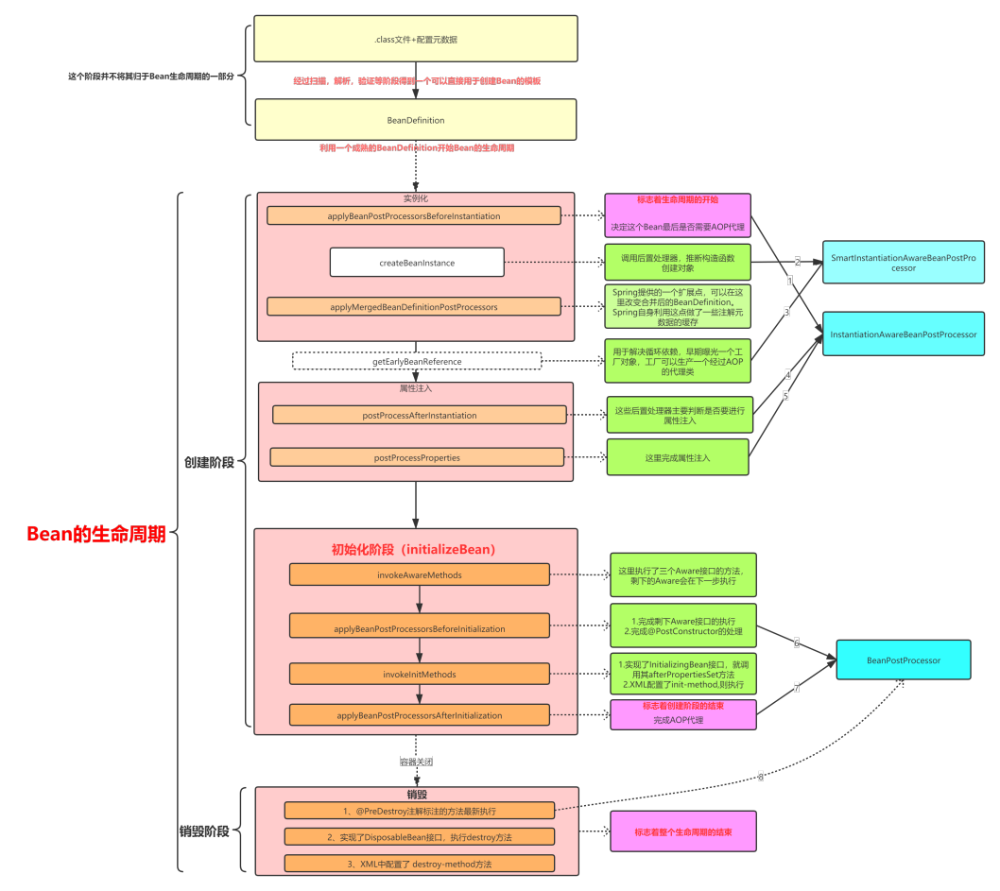

TreeviewCopyright @doctording all right reserved, powered by aleen42
bean的生命周期？
- 以如下测试代码为例
@Test
public void testClassPathXmlApplicationContextBean() {
ApplicationContext applicationContext =
new ClassPathXmlApplicationContext("spring-full-life.xml");
System.out.println("----------------applicationContext");
FullBean fullBean = (FullBean)applicationContext.getBean("fullBean");
System.out.println("fullBean.getName:" + fullBean.getName());
((ClassPathXmlApplicationContext) applicationContext).close();
}
其中单例fullBean依赖了单例fullBeanB且配置了相关初始化，销毁方法，和BeanPostProcessor
<?xml version="1.0" encoding="UTF-8"?>
<beans xmlns="http://www.springframework.org/schema/beans"
xmlns:xsi="http://www.w3.org/2001/XMLSchema-instance"
xsi:schemaLocation="http://www.springframework.org/schema/beans https://www.springframework.org/schema/beans/spring-beans-3.0.xsd">
<bean id="fullBean" class="com.mb.fulllife.FullBean" init-method="selfInit" destroy-method="selfDestroy">
<property name="name" value="tom"></property>
<property name="fullBeanB" ref="fullBeanB"/>
</bean>
<bean id="fullBeanB" class="com.mb.fulllife.FullBeanB" init-method="selfInit" destroy-method="selfDestroy">
</bean>
<bean id="fullLifeInstantiationAwareBeanPostProcessor" class="com.mb.fulllife.FullLifeInstantiationAwareBeanPostProcessor">
</bean>
<bean id="fullLifeBeanPostProcessor" class="com.mb.fulllife.FullLifeBeanPostProcessor">
</bean>
</beans>
- bean生命周期代码流程
ClassPathXmlApplicationContext
doGetBean(InstantiationAwareBeanPostProcessor
doGetBean(BeanPostProcessor
doGetBean(fullBean
dependsOn
createBean
resolveBeforeInstantiation
applyBeanPostProcessorsBeforeInstantiation（应用所有的InstantiationAwareBeanPostProcessor）
postProcessBeforeInstantiation
doCreateBean
createBeanInstance(推断构造方法，反射创建一个对象)
populateBean(设置属性，其中依赖Bean 要走 依赖bean的创建逻辑)
InstantiationAwareBeanPostProcessor：postProcessAfterInstantiation
applyPropertyValues(beanName, mbd, bw, pvs);
initializeBean
applyBeanPostProcessorsBeforeInitialization（应用所有的BeanPostProcessor）
postProcessBeforeInitialization
invokeInitMethods
InitializingBean(afterPropertiesSet)
InitMethod
加入单例池
fullBean.getName ( bean的使用)
((ClassPathXmlApplicationContext) applicationContext).close()
doClose
Publish shutdown event.
lifecycleProcessor.onClose();
destroyBeans
DisposableBean
destroy-method
closeBeanFactory
onClose()
this.active.set(false);
Runtime.getRuntime().removeShutdownHook(this.shutdownHook);
单例Bean生命周期图解

bean个性化定制：生命周期回调
- Initialization Callbacks
- Destruction Callbacks
- Default Initialization and Destroy Methods
- Combining Lifecycle Mechanisms
- Startup and Shutdown Callbacks
- Shutting Down the Spring IoC Container Gracefully in Non-Web Applications
关键词：
- InitializingBean
- DisposableBean
- @PostConstruct
- @PreDestroy
- BeanPostProcessor
bean个性化定制：ApplicationContextAware，BeanNameAware等
ApplicationContextAware 例子
@Component
public class CommandManager implements ApplicationContextAware {
private ApplicationContext applicationContext;
public CommandManager() {
System.out.println("CommandManager construct");
}
/**
* CommandManager 需要一个依赖一个 `@Scope("prototype")`的 Command Bean, 但是自身又是 单例Bean
* 通过实现 ApplicationContextAware, 能获取到 CommandManager 所在的 ApplicationContext，然后再据此获取原型 Command Bean
*/
public String process(int commandState) {
// grab a new instance of the appropriate Command
Command command = createCommand();
System.out.println("command:" + command);
// set the state on the (hopefully brand new) Command instance
command.setState(commandState);
return command.execute();
}
protected Command createCommand() {
// notice the Spring API dependency!
return this.applicationContext.getBean("command", Command.class);
}
@Override
public void setApplicationContext(ApplicationContext applicationContext) throws BeansException {
this.applicationContext = applicationContext;
}
}
Aware接口
所有的Aware接口都是为了能让我们能拿到容器中相关的资源
回顾bean生命周期主要的三个步骤
- createBeanInstance, 创建实例
- populateBean, 属性注入（循环依赖完成）
- initializeBean, 初始化
在其中initializeBean会完成Aware接口方法的执行，源码如下
protected Object initializeBean(final String beanName, final Object bean, @Nullable RootBeanDefinition mbd) {
if (System.getSecurityManager() != null) {
AccessController.doPrivileged((PrivilegedAction<Object>) () -> {
invokeAwareMethods(beanName, bean);
return null;
}, getAccessControlContext());
}
else {
// 第一步：执行aware接口中的方法，需要主要的是，不是所有的Aware接口都是在这步执行了
invokeAwareMethods(beanName, bean);
}
Object wrappedBean = bean;
if (mbd == null || !mbd.isSynthetic()) {
// 第二步：完成Aware接口方法的执行,以及@PostConstructor,@PreDestroy注解的处理
wrappedBean = applyBeanPostProcessorsBeforeInitialization(wrappedBean, beanName);
}
try {
// 第三步：完成初始化方法执行
invokeInitMethods(beanName, wrappedBean, mbd);
}
catch (Throwable ex) {
throw new BeanCreationException(
(mbd != null ? mbd.getResourceDescription() : null),
beanName, "Invocation of init method failed", ex);
}
if (mbd == null || !mbd.isSynthetic()) {
// 第四步：完成AOP代理
wrappedBean = applyBeanPostProcessorsAfterInitialization(wrappedBean, beanName);
}
return wrappedBean;
}
Aware的执行
先完成BeanNameAware，BeanClassLoaderAware，BeanFactoryAware的执行
- BeanNameAware：获取Bean的名字
- BeanClassLoaderAware：获取加载这个Bean的类加载器
- BeanFactoryAware：获取当前的BeanFactory
private void invokeAwareMethods(final String beanName, final Object bean) {
if (bean instanceof Aware) {
if (bean instanceof BeanNameAware) {
((BeanNameAware) bean).setBeanName(beanName);
}
if (bean instanceof BeanClassLoaderAware) {
ClassLoader bcl = getBeanClassLoader();
if (bcl != null) {
((BeanClassLoaderAware) bean).setBeanClassLoader(bcl);
}
}
if (bean instanceof BeanFactoryAware) {
((BeanFactoryAware) bean).setBeanFactory(AbstractAutowireCapableBeanFactory.this);
}
}
}
接着完成Aware其它接口方法的执行，以及@PostConstructor,@PreDestroy注解的处理
protected void invokeInitMethods(String beanName, final Object bean, @Nullable RootBeanDefinition mbd)
throws Throwable {
// 是否实现了 InitializingBean接口
boolean isInitializingBean = (bean instanceof InitializingBean);
if (isInitializingBean && (mbd == null ||
// 这个判断基本恒成立，除非手动改变了BD的属性
!mbd.isExternallyManagedInitMethod("afterPropertiesSet"))) {
if (logger.isTraceEnabled()) {
logger.trace("Invoking afterPropertiesSet() on bean with name '" + beanName + "'");
}
if (System.getSecurityManager() != null) {
try {
AccessController.doPrivileged((PrivilegedExceptionAction<Object>) () -> {
// 调用afterPropertiesSet方法
((InitializingBean) bean).afterPropertiesSet();
return null;
}, getAccessControlContext());
}
catch (PrivilegedActionException pae) {
throw pae.getException();
}
}
else {
// 调用afterPropertiesSet方法
((InitializingBean) bean).afterPropertiesSet();
}
}
if (mbd != null && bean.getClass() != NullBean.class) {
String initMethodName = mbd.getInitMethodName();
if (StringUtils.hasLength(initMethodName) &&
!(isInitializingBean && "afterPropertiesSet".equals(initMethodName)) &&
!mbd.isExternallyManagedInitMethod(initMethodName)) {
invokeCustomInitMethod(beanName, bean, mbd);
}
}
}